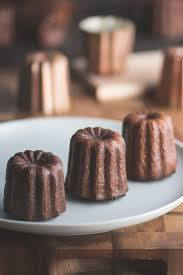

可麗露介紹

Cannelés bordelais 可麗露，相傳可麗露起源於18世紀的時，
波爾多港口進口大量麵粉跟香草，修道院的修女就收及搬運過程中散落在地上的麵粉，
波爾多也是聞名的紅酒產區，在清酒過程中酒廠會利用大量蛋白對酒進行過濾，
而剩餘的蛋黃就會送給修道院的修女們，最後修女就利用這兩樣基本原料在加入其他副產品製成Cannelé。
影片製作教學
比利時鬆餅介紹
千層蛋糕介紹
達克瓦茲介紹
心得報告